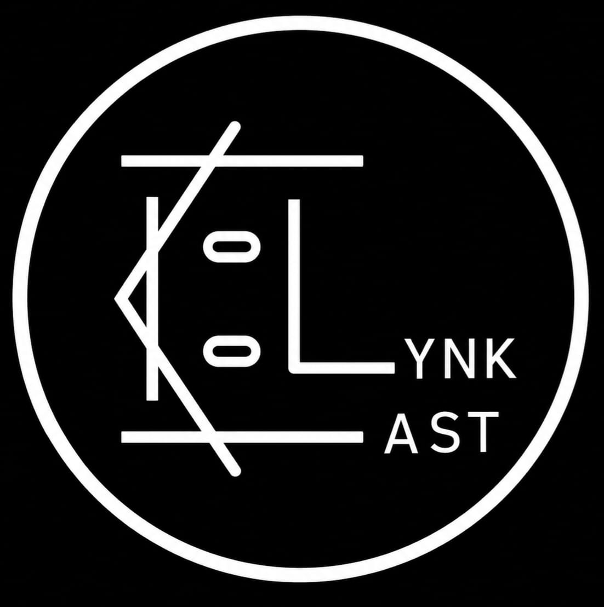

High-performance Android-to-Android screen mirroring with full remote control and legacy support.

Ultra low-latency screen streaming optimized for local networks.
Full touch interaction and gesture support from the client device.
Never miss a message. Real-time notification bridging across devices.
Optimized to keep your older Android 5.0+ devices functional.